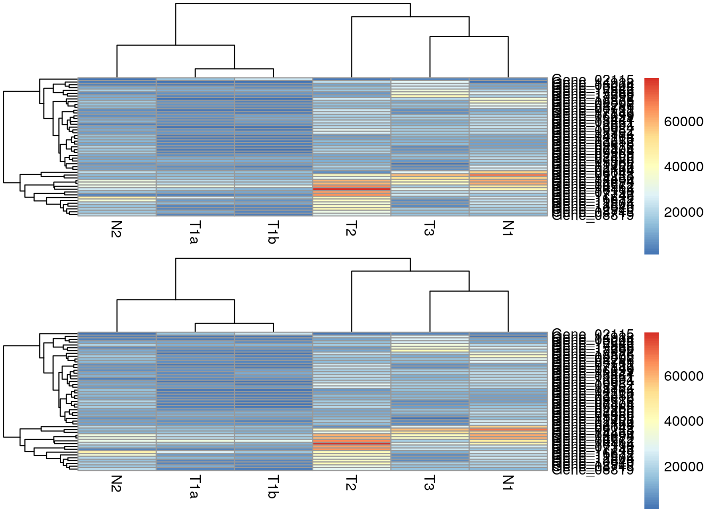
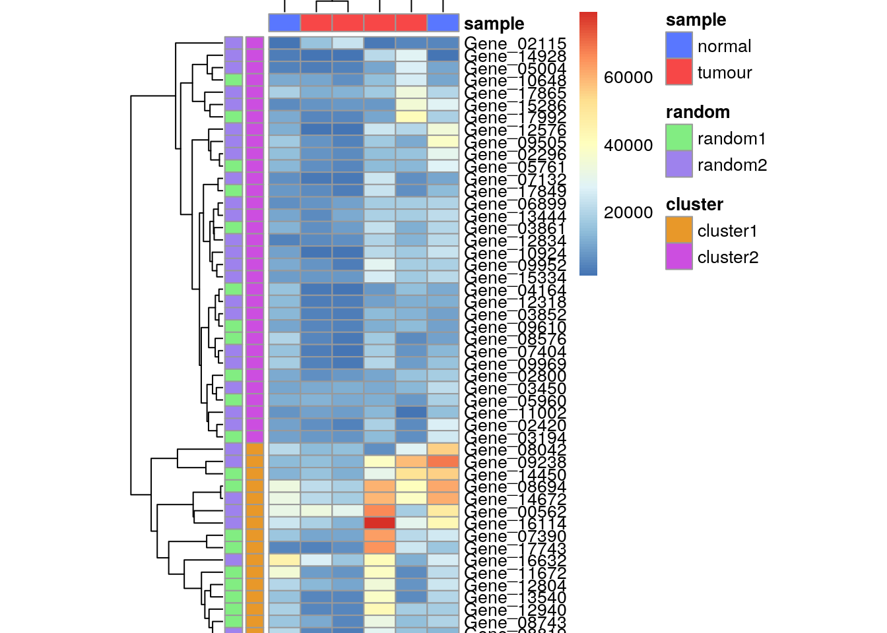

Making a heatmap in R with the pheatmap package
2020-07-12
Last updated: 2020-07-12
Checks: 7 0
Knit directory: muse/
This reproducible R Markdown analysis was created with workflowr (version 1.6.2). The Checks tab describes the reproducibility checks that were applied when the results were created. The Past versions tab lists the development history.
Great! Since the R Markdown file has been committed to the Git repository, you know the exact version of the code that produced these results.
Great job! The global environment was empty. Objects defined in the global environment can affect the analysis in your R Markdown file in unknown ways. For reproduciblity it’s best to always run the code in an empty environment.
The command set.seed(20200712) was run prior to running the code in the R Markdown file. Setting a seed ensures that any results that rely on randomness, e.g. subsampling or permutations, are reproducible.
Great job! Recording the operating system, R version, and package versions is critical for reproducibility.
Nice! There were no cached chunks for this analysis, so you can be confident that you successfully produced the results during this run.
Great job! Using relative paths to the files within your workflowr project makes it easier to run your code on other machines.
Great! You are using Git for version control. Tracking code development and connecting the code version to the results is critical for reproducibility.
The results in this page were generated with repository version b1d6edd. See the Past versions tab to see a history of the changes made to the R Markdown and HTML files.
Note that you need to be careful to ensure that all relevant files for the analysis have been committed to Git prior to generating the results (you can use wflow_publish or wflow_git_commit). workflowr only checks the R Markdown file, but you know if there are other scripts or data files that it depends on. Below is the status of the Git repository when the results were generated:
Ignored files:
Ignored: .Rhistory
Ignored: .Rproj.user/
Note that any generated files, e.g. HTML, png, CSS, etc., are not included in this status report because it is ok for generated content to have uncommitted changes.
These are the previous versions of the repository in which changes were made to the R Markdown (analysis/pheatmap.Rmd) and HTML (docs/pheatmap.html) files. If you’ve configured a remote Git repository (see ?wflow_git_remote), click on the hyperlinks in the table below to view the files as they were in that past version.
| File | Version | Author | Date | Message |
|---|---|---|---|---|
| Rmd | b1d6edd | Dave Tang | 2020-07-12 | pheatmap |
Making a heatmap using the pheatmap package.
example_file <- system.file ("extra/TagSeqExample.tab", package="DESeq")
data <- read.delim(example_file, header=T, row.names="gene")
data_subset <- as.matrix(data[rowSums(data)>50000,])Default heatmap using pheatmap.
pheatmap(data_subset)cal_z_score <- function(x){
(x - mean(x)) / sd(x)
}
data_subset_norm <- t(apply(data_subset, 1, cal_z_score))
pheatmap(data_subset_norm)
Two heatmaps.
one <- pheatmap(data_subset, silent = TRUE)
two <- pheatmap(data_subset, silent = TRUE)
grid.arrange(grobs = list(one[[4]], two[[4]]))
Reproduce the gene dendrogram.
par(mar = c(3.1, 2.1, 1.1, 5.1))
my_hclust_gene <- hclust(dist(data_subset), method = "complete")
my_hclust_gene$height [1] 2502.208 3771.244 4252.402 4366.211 4700.444 5069.851 5208.367
[8] 6439.545 6474.863 6938.482 7983.369 8141.632 9198.185 9849.175
[15] 10818.256 10868.066 11127.621 11168.654 12699.557 12871.187 13511.763
[22] 13549.622 14483.876 14856.478 14860.904 15033.046 16304.877 16574.315
[29] 16935.384 17713.534 18798.131 18904.899 20250.185 22302.634 22512.593
[36] 24345.199 29826.722 30846.374 31530.137 31849.145 40048.202 43714.148
[43] 47029.264 48908.962 56038.953 67891.667 74124.247 95015.400as.dendrogram(my_hclust_gene) %>%
plot(horiz = TRUE)
Reproduce the sample dendrogram.
my_hclust_sample <- hclust(dist(t(data_subset)), method = "complete")
as.dendrogram(my_hclust_sample) %>%
plot()Add annotations.
my_gene_col <- cutree(tree = as.dendrogram(my_hclust_gene), k = 2)
my_gene_col <- data.frame(cluster = ifelse(test = my_gene_col == 1, yes = "cluster 1", no = "cluster 2"))
my_sample_col <- data.frame(sample = rep(c("tumour", "normal"), c(4,2)))
row.names(my_sample_col) <- colnames(data_subset)
set.seed(1984)
my_random <- as.factor(sample(x = 1:2, size = nrow(my_gene_col), replace = TRUE))
my_gene_col$random <- my_random
pheatmap(data_subset, annotation_row = my_gene_col, annotation_col = my_sample_col)Change annotation colours and ordering.
my_gene_col <- cutree(tree = as.dendrogram(my_hclust_gene), k = 2)
my_gene_col <- data.frame(cluster = ifelse(test = my_gene_col == 1, yes = "cluster1", no = "cluster2"))
my_sample_col <- data.frame(sample = rep(c("tumour", "normal"), c(4,2)))
row.names(my_sample_col) <- colnames(data_subset)
# change order
my_sample_col$sample <- factor(my_sample_col$sample, levels = c("normal", "tumour"))
set.seed(1984)
my_random <- as.factor(sample(x = c("random1", "random2"), size = nrow(my_gene_col), replace = TRUE))
my_gene_col$random <- my_random
my_colour = list(
sample = c(normal = "#5977ff", tumour = "#f74747"),
random = c(random1 = "#82ed82", random2 = "#9e82ed"),
cluster = c(cluster1 = "#e89829", cluster2 = "#cc4ee0")
)
p <- pheatmap(data_subset,
annotation_colors = my_colour,
annotation_row = my_gene_col,
annotation_col = my_sample_col,
cellheight = 7,
cellwidth = 18)
save_pheatmap_png <- function(x, filename, width=1200, height=1000, res = 150) {
png(filename, width = width, height = height, res = res)
grid::grid.newpage()
grid::grid.draw(x$gtable)
dev.off()
}
# not run
# save_pheatmap_png(p, "heatmap_colour.png")Introduce breaks by cutting the dendrogram.
pheatmap(data_subset,
annotation_row = my_gene_col,
annotation_col = my_sample_col,
cutree_rows = 2,
cutree_cols = 2)Dendrogram results from pheatmap().
par(mar = c(3.1, 2.1, 1.1, 5.1))
my_heatmap <- pheatmap(data_subset, silent = TRUE)
names(my_heatmap)[1] "tree_row" "tree_col" "kmeans" "gtable" my_heatmap$tree_row %>%
as.dendrogram() %>%
plot(horiz = TRUE)
sessionInfo()R version 4.0.0 (2020-04-24)
Platform: x86_64-apple-darwin17.0 (64-bit)
Running under: macOS Catalina 10.15.5
Matrix products: default
BLAS: /Library/Frameworks/R.framework/Versions/4.0/Resources/lib/libRblas.dylib
LAPACK: /Library/Frameworks/R.framework/Versions/4.0/Resources/lib/libRlapack.dylib
locale:
[1] en_US.UTF-8/en_US.UTF-8/en_US.UTF-8/C/en_US.UTF-8/en_US.UTF-8
attached base packages:
[1] parallel stats graphics grDevices utils datasets methods
[8] base
other attached packages:
[1] gridExtra_2.3 dendextend_1.13.4 DESeq_1.39.0
[4] lattice_0.20-41 locfit_1.5-9.4 Biobase_2.48.0
[7] BiocGenerics_0.34.0 pheatmap_1.0.12 workflowr_1.6.2
loaded via a namespace (and not attached):
[1] Rcpp_1.0.5 rprojroot_1.3-2 digest_0.6.25
[4] R6_2.4.1 backports_1.1.8 stats4_4.0.0
[7] RSQLite_2.2.0 evaluate_0.14 ggplot2_3.3.2
[10] pillar_1.4.6 rlang_0.4.7 rstudioapi_0.11
[13] annotate_1.66.0 whisker_0.4 blob_1.2.1
[16] S4Vectors_0.26.1 Matrix_1.2-18 rmarkdown_2.3
[19] splines_4.0.0 geneplotter_1.66.0 stringr_1.4.0
[22] RCurl_1.98-1.2 bit_1.1-15.2 munsell_0.5.0
[25] compiler_4.0.0 httpuv_1.5.4 xfun_0.15
[28] pkgconfig_2.0.3 htmltools_0.5.0 tidyselect_1.1.0
[31] tibble_3.0.3 IRanges_2.22.2 XML_3.99-0.4
[34] viridisLite_0.3.0 crayon_1.3.4 dplyr_1.0.0
[37] later_1.1.0.1 bitops_1.0-6 grid_4.0.0
[40] xtable_1.8-4 gtable_0.3.0 lifecycle_0.2.0
[43] DBI_1.1.0 git2r_0.27.1 magrittr_1.5
[46] scales_1.1.1 stringi_1.4.6 farver_2.0.3
[49] genefilter_1.70.0 viridis_0.5.1 fs_1.4.2
[52] promises_1.1.1 ellipsis_0.3.1 vctrs_0.3.1
[55] generics_0.0.2 RColorBrewer_1.1-2 tools_4.0.0
[58] bit64_0.9-7 glue_1.4.1 purrr_0.3.4
[61] survival_3.2-3 yaml_2.2.1 AnnotationDbi_1.50.1
[64] colorspace_1.4-1 memoise_1.1.0 knitr_1.29